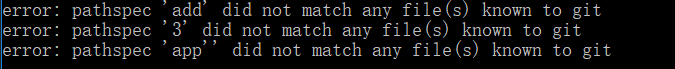

今天提交文件到github时，在第二步git commit -m 'xxx'时，出现错误，错误如下： 
按理， git commit -m 'xxx' 语法上是没有问题的，但总是提交不了，最后查阅文档，说是在Linux系统中，commit命令的指示信息使用单引号'xxx'包括，我使用的windows系统，信息要使用双引号"xxx"包括.
git commit -m 'xxx'
即第二步命令使用 git commit -m"xxx".
git commit -m"xxx"
参考文档：github 使用“git commit -m"命令时候出现的一个小问题